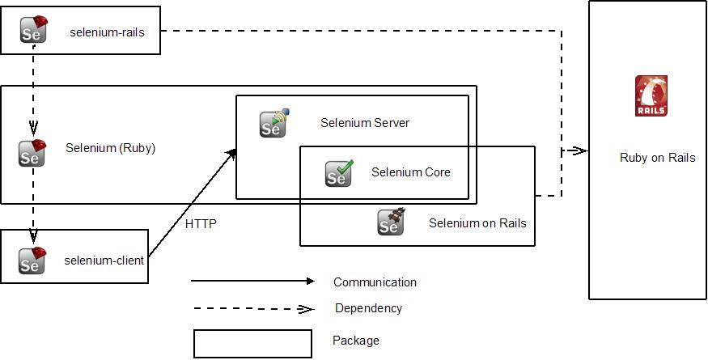

The selenium-client is the second and better release of Ruby driver for Selenium RC. It provide a simple yet idiomatic Ruby API to write Selenium tests in Ruby. Gives you a straightforward way to write your Selenium tests in Ruby as well as additional support for rSpec and rake.
To install, use command "gem install selenium-client"
The selenium-ruby bundles Selenium RC Server to provide additional server management
To install, use command "gem install Selenium" (with the rigth case for Selenium)
Selenium Rails supports the use of Selenium RC with Ruby on Rails projects.
To install, use command "gem install selenium-rails"
The picture of Selenium on Ruby is composed of several selenium related ruby gems that work together.
